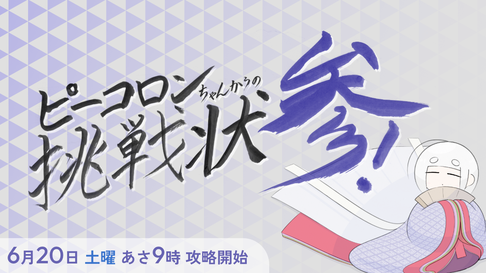
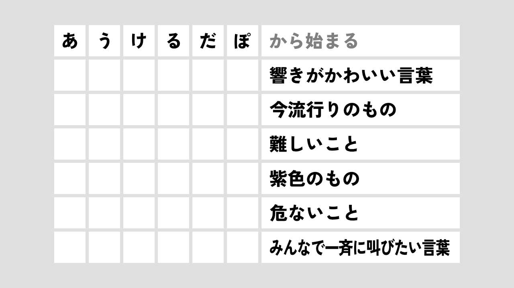
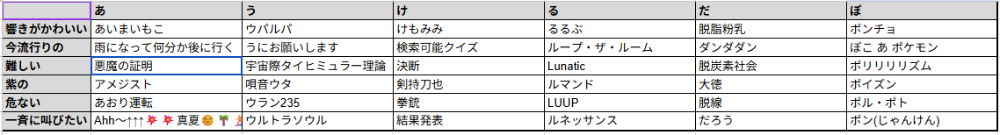

言葉遊びコミュニティでの大規模イベント進行・管理

基本情報
- 制作時期
- 大学4年6月20,21日（イベント『ピーコロンちゃんからの挑戦状 参』）
- 役割
- コーナー司会進行、議論のファシリテーション
- 使用ツール
- Discord(議論)、Excel(結果まとめ)
- 規模
- 参加者 約50名 / 議論時間 6時間
- 成果
- お題のマトリックス埋め完遂
制作のきっかけ / 活動の背景
私が所属していた言葉遊びコミュニティ『ピーコロン』の3周年イベントにて、去年に引き続きユーザー全員で協力してクリアを目指す大規模企画が行われました。
「48個のお題をクリアして漢字を解禁し、最終的にその漢字を解禁順に使って文章を構築できたらクリア」というルールの中、私は2日目最難関のお題の一つである「指定のカナで始まる、テーマに沿った言葉を決める」（通称：三十六計決めるに如かず）の進行役を担当することになりました。
こだわった点・工夫した点
- 今年こそは、メリハリをもって本気で
- 「内輪ノリ」を許容し、コミュニティの文化を作る
今年も、引き続いて進行役として『候補出し』『決選投票』『結果の集計』を一手に引き受け、他の参加者が全力で議論できるよう整理に努めました。
去年、なんとなく候補を出して、なんとなく議論を開始して、人が少なく初速が乗らなかったことを反省。今年は時間をきっちり決め、議論開始時には参加を呼び掛ける投稿を行いました。
また、昨年は12時を回ったタイミングで進行を他の人に任せて進めていたところを、今年は1時間の休憩をとり、進行の私だけでなく議論参加者も休んで、最高の状態で議論ができるようにしました。これは、去年よりイベントそのものの進行が順調で、コミュニティ全体としても日中や夜間に休憩できる環境があったことも一助になっています。
議論の中で「この単語はゲームでいえば○面ボス」という突飛な意見が出ました。今年もまた内輪ノリができたと思い、泳がせているとやはり一部のユーザーの手によって発展することとなりました。
今年はそのようなコミュニティ内ミームになりうる単語が複数あったため、去年ほど盛り上がりが一極集中せず、現時点で定着には至っていませんが、毎年この時期の盛り上がりの一助を担ってもらえていると感じています。
結果
後半になるにつれて議論/投票が白熱し、特に「『だ』から始まる、難しいこと」は決選投票に53人が参加してなお1票差と意見が割れに割れ、1時間超えの大激論が繰り広げられました。無事に15時11分に全文字が確定。
最終的な成果物は以下のシートにまとめられ、イベントクリアの大きな足掛かりとなりました。
▼ 今回のお題と、完成したマトリックス


振り返り・反省
先述の「『だ』から始まる、難しいこと」の議論が長期化した原因は、ただ1票差で競っていたことだけではありません。最終決定を担うべき私の躊躇が、議論を長期化させてしまいました。
前提として私の判断基準は、「投票で3票差がつくまでは僅差として継続、5票差がついた時点で確定」というものを大まかに設けています。
この時も14時11分に最後の二択となる決選投票が行われ、一時5票差がついたことを確認していました。しかし、進行役の私が投票終了を押すより前に、参加者としての私が「まだ押すべきではない」と思ってしまいました。そのとき、少数派に属してしまっていたのです。
結果として、そのタイミングから30分以上も議論を長引かせてしまい、話題の脱線や人の離脱を招いた状態で終了させてしまいました。
今後は、進行役としての立場と参加者としての立場を明確に分け、進行役としての判断を優先することを徹底していきたいです。